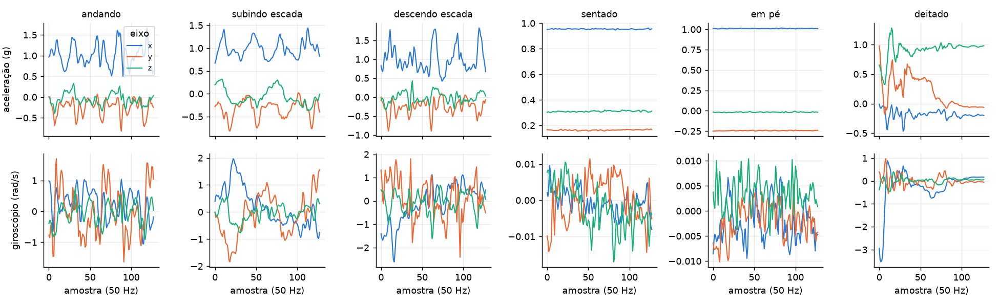
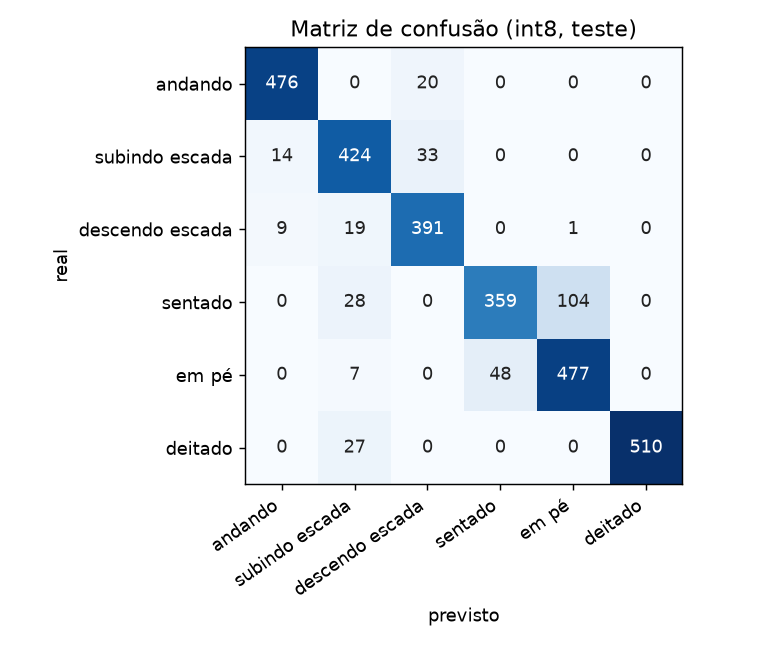

IA Embarcada e Modelos Compactos · Projeto final
Um acelerômetro e um giroscópio, uma rede neural de 4630 parâmetros comprimida para int8, e tudo rodando no chip, simulado no Wokwi.
Dado o movimento de uma pessoa, dizer o que ela está fazendo: andando, subindo escada, descendo escada, sentada, em pé ou deitada.
O modelo roda dentro de um microcontrolador, perto do sensor. Assim a decisão acontece no próprio dispositivo, sem mandar o sinal bruto para outro lugar.
Isso obriga o modelo a ser pequeno. Neste projeto ele ficou com 9856 bytes.
Hardware: ESP32-S3 e MPU6050 (acelerômetro e giroscópio), simulados no Wokwi.
30 voluntários com um celular na cintura, 6 atividades, sensor a 50 Hz. Os dados já vêm em janelas de 128 amostras (2,56 s).
São usados 6 canais, os mesmos que o MPU6050 entrega: aceleração (x, y, z, em g) e giroscópio (x, y, z, em rad/s).
| Conjunto | Janelas | Pessoas |
|---|---|---|
| Treino | 5952 | 17 |
| Validação | 1400 | 4 |
| Teste | 2947 | 9 |

Uma janela de cada atividade. A separação é por pessoa: o teste mede pessoas que o modelo nunca viu.
Cada convolução desliza pelo tempo procurando padrões, como o balanço de uma passada. O pooling reduz o tamanho. A camada final dá a probabilidade de cada atividade.
O Conv2D com kernel (5, 1) é, na prática, uma convolução 1D. Foi escolhido por ser a convolução mais bem suportada no TFLite Micro.
| Camada | Parâmetros |
|---|---|
| Conv 16 (6 canais, kernel 5) | 496 |
| Conv 32 (16 canais, kernel 5) | 2592 |
| Densa (256 entradas, 6 saídas) | 1542 |
| Atividade | Acerto |
|---|---|
| andando | 96,0% |
| subindo escada | 90,0% |
| descendo escada | 93,1% |
| sentado | 73,1% |
| em pé | 89,7% |
| deitado | 95,0% |

O maior erro é sentado previsto como em pé (104 de 491). São duas posturas paradas e o sensor sente quase a mesma coisa.
Os números de float32 (4 bytes) são trocados por inteiros de 8 bits, com uma escala e um ponto zero para cada tensor. A escala vem de 300 janelas de treino de exemplo.
O chip faz as contas em inteiros, que são mais rápidas e leves. O arquivo não cai exatamente 4×, porque guarda também a estrutura do modelo e os parâmetros de quantização.
A inferência leva centenas de milissegundos e as amostras chegam a cada 20 ms. Por isso a leitura do sensor fica numa tarefa do FreeRTOS com prioridade maior, e a inferência na tarefa principal.
Assim nenhuma amostra se perde enquanto o modelo roda: a tarefa do sensor monta a janela e avisa a tarefa principal quando ela está completa.
O MPU6050 do Wokwi tem controles de aceleração e giro que ficam parados. Para ele se mexer, um cenário do wokwi-cli muda os controles a cada 20 ms com uma janela real do dataset.
# saída serial do chip simulado, cenário "andando" (log completo em simulacao/logs/) # | real | previsto | prob | pre(us) | inf(us) | igual ao PC 0 | andando | andando | 1.00 | 11019 | 279230 | sim ... 36 | sentado | em pe | 0.67 | 10700 | 279299 | sim ... Acuracia no chip: 58/60 (96.7%) Saida int8 identica a do PC: 60/60 janelas Tempo medio: pre-processamento 10841 us, inferencia 279276 us === MODO LIVE: lendo o MPU6050 a 50 Hz === [live] janela 1: andando (prob 1.00)
| Atividade real | Previsto pelo chip (live) | Prob. |
|---|---|---|
| andando | andando | 1,00 |
| subindo escada | subindo escada | 1,00 |
| descendo escada | descendo escada | 0,89 |
| sentado | sentado | 0,76 |
| em pé | em pé | 0,98 |
| deitado | deitado | 1,00 |
As 128 amostras lidas pelo firmware bateram com o dataset (diferença máxima de 0,0003). Resultados iguais no ESP-IDF 5.5.5 e 6.1. O modo live testou uma janela por atividade: mostra que a cadeia funciona, não mede acurácia.
Limitações
O que ficou
Dataset: Anguita et al., 2013 (UCI HAR, CC BY 4.0). TensorFlow Lite Micro via espressif/esp-tflite-micro.